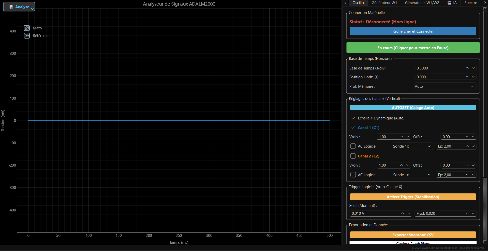

L'Oscilloscope Augmenté par l'IA
Une plateforme d'instrumentation professionnelle pour le module Analog Devices ADALM2000, offrant une expérience de laboratoire révolutionnaire grâce à l'intelligence artificielle.

L'IA au Cœur du Signal
Contrairement aux outils traditionnels, ADALM2000 Laboratory intègre un assistant intelligent pour une interaction sans précédent avec votre matériel.
Pilotage Naturel
Configurez votre matériel par la voix ou le texte. "Génère une sinusoïde de 1kHz avec une amplitude de 2V" suffit pour agir.
Prototypage NumPy
Demandez des signaux sophistiqués (Chirps, modulations, ECG) et l'IA écrit le code NumPy optimal en temps réel.
Prévisualisation IA
Visualisez instantanément la réponse théorique générée par l'IA avant de l'envoyer physiquement sur les sorties W1/W2.
Fonctionnalités Principales
Une suite complète d'outils d'analyse et de contrôle pour les ingénieurs et les étudiants.
📊 Analyses
- Oscilloscope 2 canaux (30+ FPS)
- Analyseur de Spectre (FFT)
- Voltmètre Intelligent (RMS, Vpp)
- Analyse de Lissajous (XY)
⚙️ Contrôle
- Générateur AWG (W1, W2)
- Trigger Logiciel avec Hystérésis
- Outils de Mesure (Curseurs)
- Filtre "Squelch" anti-bruit
💾 Données
- Data Logger (Export CSV)
- Captures PNG Haute Résolution
- Snapshots & Références
- Sauvegarde d'état complète
🚀 Démarrage Rapide
Installation Automatique
Téléchargez et décompressez l'archive, puis exécutez l'installeur pour configurer Python et les drivers.
Configuration de l'IA
Rendez-vous dans l'onglet 🤖 IA de l'application et entrez votre clé API Groq (gratuite).
Explorez
Décrivez votre besoin : "Génère un signal ECG simulé à 60 BPM" ou "Simule une décharge de condensateur".
Stack Technique : Python 3.9+ | PyQt6 | Pyqtgraph | Libm2k | API Groq (Llama 3.3)